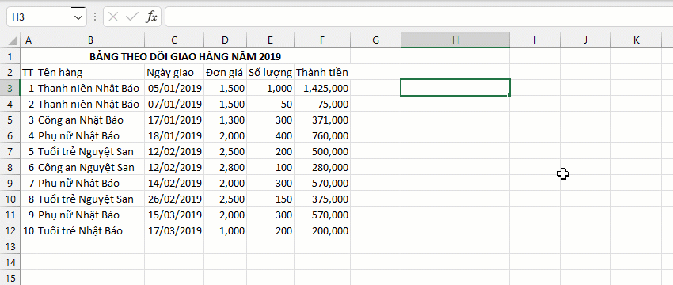
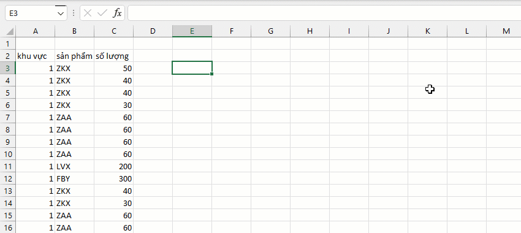
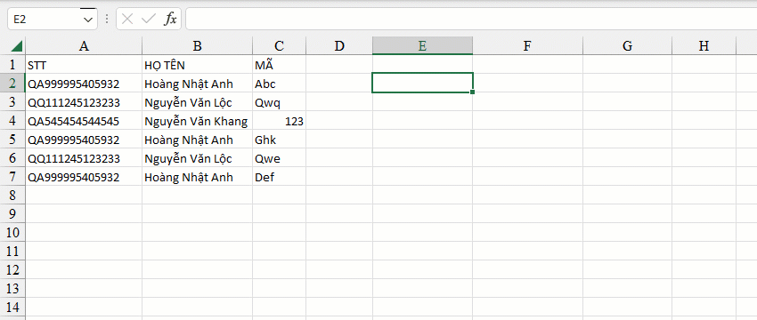
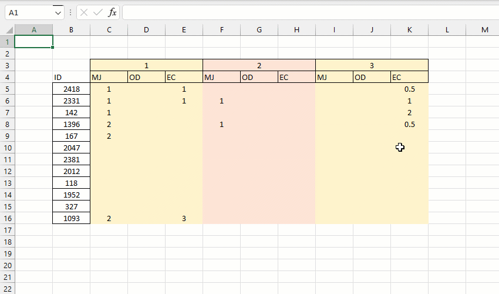

VD1: Liệt kê tất cả tên hàng (tên báo) và tính tổng doanh thu cả năm của mỗi tên hàng.
VD2: Liệt kê tất cả mã hàng và tính tổng theo từng khu vực.
VD3: Phân nhóm dựa trên 2 tiêu chí (STT và Họ tên) và nối các mã kết quả với nhau bởi dấu phân tách.
VD4: Thống kê tất cả tên đơn và tổng số lượng mỗi đơn theo từng ngày trong khoảng thời gian chỉ định.

VD5: Thống kê tất cả ID, mã hàng và số lượng tương ứng theo từng tháng.
=GROUP.\AU(array, [has_header], colsgroup_index, [cols_index], [func_name],..) - array: tham chiếu vùng. - has_header: chỉ rõ vùng chứa header hoặc không?. - colsgroup_index: danh sách vị trí cột phân nhóm. - cols_index: vị trí cột tính toán. - func_name : công thức tùy chỉnh áp dụng cho cột (hỗ trợ các hàm tùy chỉnh nâng cao - xem danh sách phía dưới).
- Hàm không phụ thuộc vào số lượng cột cũng như số lượng dòng dữ liệu. - Bất kỳ yêu cầu tính toán phân nhóm hoặc dữ liệu có thể xử lý bằng PIVOT bạn đều có thể xem xét sử dụng hàm GROUP. - Hàm hỗ trợ thêm cột mới (vị trí cuối cùng) để tính giá trị ẩn phụ. - Vd: =GROUP.\AU(SPLITY.\AU(A3:B6,";",,2),,{1,2},3,"COUNTA") sẽ bị lỗi tại cột 3. sửa bằng cách tăng A3:B6 thành 3 cột hoặc cột 3 phải tính theo ẩn phụ. - Chỉ cho phép đặt ẩn phụ trong phạm vi cột (Vd: GROUP(array,,1,"v1=max",2,"v2=min",3,"v1+v2")).
- SUM - MEDIAN - MAX/MIN/AVERAGE - COUNT/COUNTA/COUNTNIL/COUNTBLANK [vd: đếm số/đếm không trống/đếm trống/đếm trống và chuỗi trống] - COUNTUNIQUE [vd: đếm số giá trị duy nhất trên cột c1] - COUNTUNIQUEROWS [vd: đếm số hàng duy nhất trong chính phân nhóm đó] - MAXIF/MINIF/COUNTIF/SUMIF/AVERAGEIF/PRODUCTIF [vd: maxif('>5')] - ROWS [vd: trả về số lượng phần tử mỗi nhóm] - INDEX/MATCH [vd: index(5), match('a') - JOIN/JOINIF [vd: join(',') hoặc joinif(',',,'>5')]
Related function
GROUPBY Phân nhóm bảng dữ liệu dựa trên một mảng dữ liệu chỉ định, hỗ trợ tính toán tùy chỉnh.
XGROUP Hàm mở rộng của GROUP. (hỗ trợ các hàm nâng cao).
INCREASE.ADJ Đánh số thứ tự tăng dần theo từng phân nhóm hoặc phần tử trong phân nhóm đó.
Return to Home